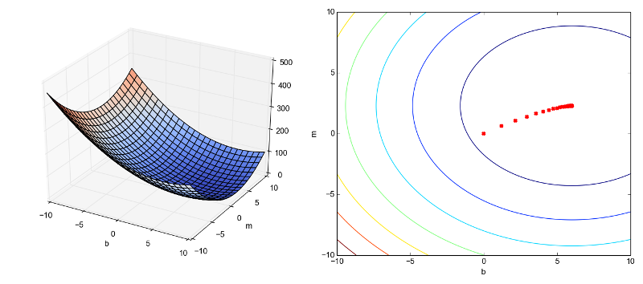
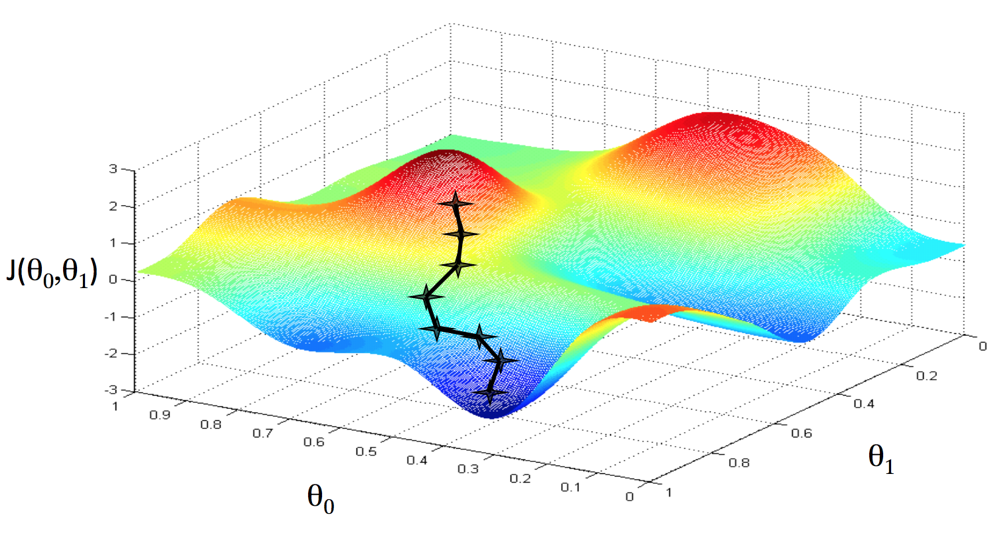
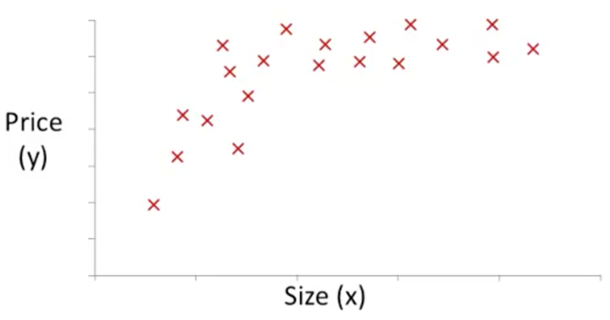

Machine Learning
Table of Contents
1 Introduction
1.1 Definition
Arthur Samuel described Machine Learning as:
The field of study that gives computers the ability to learn without being explicitly programmed.
Tom Mitchell provides a more modern definition:
A computer program is said to learn from experience E with respect to some class of tasks T and performance measure P, if its performance at tasks in T, as measured by P, improves with experience E.
Examples of Machine Learning applications:
| Database mining | web click data, medical records, biology, engineering |
|---|---|
| Applications can't program by hand | autonomous helicopter, handwriting recognition |
| Natural Language Processing (NLP), computer vision | |
| Self-customizing programs | Amazon, Netflix product recommendations |
| Understanding human learning |
1.2 Supervised Learning
In supervised learning, we are given a data set and already know what the corresponding output should be, having the idea that there is a relationship between the input and the output. Supervised learning problems are categorized into regression and classification problems.
- A regression problem is to predict results within a continuous output, meaning to map input variables to some continuous function. For example, given data about the size of houses on the real estate market, try to predict their price.
- A classification problem is to predict results in a discrete output, meaning to map input variables into discrete categories. For example, given a patient with a tumor, to predict whether the tumor is malignant or benign.
1.3 Unsupervised Learning
Unsupervised learning approaches problems with little or no idea what the results should look like. Structure is derived by clustering the data based on relationships among the variables in the data. There is no feedback based on the prediction results.
- A clustering problem: take a collection of 1,000,000 different genes, and find a way to automatically group these genes into groups that are somehow similar or related by different variables, such as lifespan, location, roles, and so on.
- A non-clustering problem: find structure in a chaotic environment, for example, identifying individual voices and music from a mesh of sounds at a cocktail party, by using the "Cocktail Party Algorithm".
2 Model and Cost Function
2.1 Model Representation
To establish notation for future use:
| \(x\) | An input variable, also called input feature |
|---|---|
| \(y\) | An output or target variable to predict |
| \((x, y)\) | A training example |
| A list of training examples is called a training set | |
| \(m\) | Number of training examples |
| \(\theta\) | A parameter in the function |
| \(h_\theta(x)\) | A function to predict \(y\) for a given \(x\) |
| For linear regression, \(h_\theta(x) = \theta_0 + \theta_1 x\) |
The goal of supervised learning is, given a training set, to learn a function \(h_\theta(x)\). For historical reasons, this function is called a hypothesis.

2.2 Cost Function
Cost function is used to measure the accuracy of hypothesis function. It takes an average difference of all the results of the hypothesis with inputs from \(x\) and the actual output \(y\).
\[ J(\theta) = \frac{1}{2m} \sum_{i=1}^{m} {(h_\theta(x^{(i)}) - y^{(i)})}^2 \]
This function is otherwise called "squared error function", or "mean squared error". The goal of supervised learning is more accurately defined as finding the \(\theta\) (parameters of the hypothesis function) to minimize the value of \(J(\theta)\).
For linear regression, the value of the cost function \(J(\theta_0,\theta_1)\), while \(\theta_0\) and \(\theta_1\) changes, will form a three-dimensional surface. We can use a contour plot to represent this surface in two dimensions.

3 Parameter Learning
3.1 Gradient Descent
To graph the cost function \(J(\theta_0,\theta_1)\), We put \(\theta_0\) on \(x\) axis and \(\theta_1\) on the \(y\) axis, with the cost function on the \(z\) axis.

The goal is to reach the point at the very bottom of the pits in the graph. The way to do this is to keep making steps down the cost function in the direction with the steepest descent.
- The direction for each step is determined by the partial derivative of the cost function at each point.
- The size of each step is determined by the parameter \(\alpha\), called the learning rate.
This algorithm is called gradient descent:
\[ \begin{align*} & \text{repeat until convergence}\ \{\\ & \quad \theta_j := \theta_j - \alpha \frac{\partial}{\partial \theta_j} J(\theta_0,\theta_1) \quad \text{(for j = 0 and j = 1)} \\ & \} \end{align*} \]
At each iteration, the parameters should be updated simultaneously.
\[ \begin{array}{l|l} \mathbf{\text{Correct}} & \mathbf{\text{Incorrect}} \\ \text{temp}_0 := \theta_0 - \alpha \frac{\partial}{\partial \theta_0} J(\theta_0,\theta_1) & \text{temp}_0 := \theta_0 - \alpha \frac{\partial}{\partial \theta_0} J(\theta_0,\theta_1) \\ \text{temp}_1 := \theta_1 - \alpha \frac{\partial}{\partial \theta_1} J(\theta_0,\theta_1) & \theta_0 := \text{temp}_0 \\ \theta_0 := \text{temp}_0 & \text{temp}_1 := \theta_1 - \alpha \frac{\partial}{\partial \theta_1} J(\theta_0,\theta_1) \\ \theta_1 := \text{temp}_1 & \theta_1 := \text{temp}_1 \end{array} \]
Consider a cost function \(J(\theta_1)\) with only one parameter \(\theta_1\), its gradient descent needs to converge \(\theta_1 := \theta_1 - \alpha \frac{d}{d\theta_1} J(\theta_1)\), then we can see that:
- Regardless of the partial derivative's sign, \(\theta_1\) will eventually converge to its minimum value, because when partial derivative is positive, \(\theta_1\) decreases, and when partial derivative is negative, \(\theta_1\) increases.
- Learning rate \(\alpha\) should be adjusted to ensure that the gradient descent algorithm converges in a reasonable time. If \(\alpha\) is too small, gradient descent can be slow. If \(\alpha\) is too large, gradient descent may fail to converge.
- As \(\theta_1\) approaches a local minimum, gradient descent will automatically take smaller steps because \(\frac{d}{d\theta_1} J(\theta_1)\) will approach 0, so there is no need to decrease \(\alpha\), it can be a fixed value.
3.2 Gradient Descent for Linear Regression
When applied to the case of linear regression, a new form of the gradient descent equation can be derived (skipping the deriving process), by substituting the partial derivative with the definition of the cost function:
\[ \begin{array}{l|l} \mathbf{\text{Before}} & \mathbf{\text{After}} \\ \text{repeat until convergence}\ \{ & \text{repeat until convergence}\ \{ \\ \quad \theta_j := \theta_j - \alpha \frac{\partial}{\partial \theta_j} J(\theta_0,\theta_1) & \quad \theta_0 := \theta_0 - \alpha \frac{1}{m} \sum_{i=1}^{m} (h_\theta(x^{(i)}) - y^{(i)}) \\ \} & \quad \theta_1 := \theta_1 - \alpha \frac{1}{m} \sum_{i=1}^{m} (h_\theta(x^{(i)}) - y^{(i)})x^{(i)} \\ & \} \end{array} \]
Because his method looks at every example (the \(\sum_{i=1}^{m}\) part) in the entire training set on every step, it is called batch gradient descent.
Note that, while gradient descent can be susceptible to local minima in general (as shown in the above 3D graph), the optimization problem for linear regression has only one global optima, because \(J(\theta_0,\theta_1)\) is a convex quadratic function; thus gradient descent always converges (assuming the learning rate is not too large) to the global minimum.
4 Linear Algebra Review
4.1 Matrices and Vectors
Matrices are 2-dimensional arrays, for example, a 4 x 3 matrix:
\[ \begin{bmatrix} 1 & 2 & 3 \\ 4 & 5 & 6 \\ 7 & 8 & 9 \\ 10 & 11 & 12 \end{bmatrix} \]
Vectors are matrices with only one column, a vector with n rows is called n-dimensional vector, for example, a 4-dimensional vector:
\[ \begin{bmatrix} 1 \\ 2 \\ 3 \\ 4 \end{bmatrix} \]
Common notations:
| \(A_{ij}\) | Element in the \(i^{th}\) row and \(j^{th}\) column of matrix \(A\) |
|---|---|
| \(v_i\) | Element in the \(i^{th}\) row of vector \(v\) |
| scalar | A single value, in constrast of a matrix or vector |
| \(\mathbb{R}\) | The set of scalar real numbers |
| \(\mathbb{R}^{n}\) | The set of n-dimensional vectors of real numbers |
4.2 Matrix Calculations
4.2.1 Addition and Substraction
Matrix addition and subtraction are element-wise, therefore the dimensions must be the same.
4.2.2 Scalar Multiplication and Division
In scalar multiplication and division, we simply multiply and divide every element by the scalar value.
\[ \begin{bmatrix} a & b \\ c & d \end{bmatrix} \times x = \begin{bmatrix} a \times x & b \times x \\ c \times x & d \times x \end{bmatrix} \]
4.2.3 Vector Multiplication
When a matrix is multiplied by a vector, we map the column of the vector onto each row of the matrix, multiplying each element and summing the result.
\[ \begin{bmatrix} a & b \\ c & d \\ e & f \end{bmatrix} \times \begin{bmatrix} x & y \end{bmatrix} = \begin{bmatrix} a \times x + b \times y \\ c \times x + d \times y \\ e \times x + f \times y \end{bmatrix} \]
- An \(m \times n\) matrix multiplied by an \(n \times 1\) vector results in an \(m \times 1\) vector.
- The number of columns of the matrix must equal the number of rows of the vector.
Vector multiplication can be used to simplify the calculation of applying a (linear) hypothesis function on a data set, for example:
- The data set is 1, 2, 3, 4.
- The hypothesis is \(h_\theta(x) = -5 + 2x\).
The calculation can be simplied as:
\[ \begin{bmatrix} 1 & 1 \\ 1 & 2 \\ 1 & 3 \\ 1 & 4 \end{bmatrix} \times \begin{bmatrix} -5 \\ 2 \end{bmatrix} = \begin{bmatrix} -3 \\ -1 \\ 1 \\ 3 \end{bmatrix} \]
4.2.4 Matrix Multiplication
The multiplication of two matrices can be broken down into several matrix-vector multiplications, and concatenating the results together.
\[ \begin{bmatrix} a & b \\ c & d \\ e & f \end{bmatrix} \times \begin{bmatrix} w & x \\ y & z \end{bmatrix} = \begin{bmatrix} a \times w + b \times y & a \times x + b \times z \\ c \times w + d \times y & c \times x + d \times z \\ e \times w + f \times y & e \times x + f \times z \end{bmatrix} \]
- An \(m \times n\) matrix multiplied by an \(n \times p\) matrix results in an \(m \times p\) vector.
- The number of columns of the first matrix must equal the number of rows of the second matrix.
Matrix multiplication can be used to simply the calculcation of applying several (linear) hypothesis functions on a data set, for example:
- The data set is 1, 2, 3, 4.
- The hypothesis functions are:
- \(h_\theta(x) = -5 + 2x\)
- \(h_\theta(x) = -8 + 0.5x\)
- \(h_\theta(x) = 10 - x\)
The calculation can be simplified as:
\[ \begin{bmatrix} 1 & 1 \\ 1 & 2 \\ 1 & 3 \\ 1 & 4 \end{bmatrix} \times \begin{bmatrix} -5 & -8 & 10 \\ 2 & 0.5 & -1 \end{bmatrix} = \begin{bmatrix} -3 & -7.5 & 9 \\ -1 & -7 & 8 \\ 1 & -6.5 & 7 \\ 3 & -6 & 6 \end{bmatrix} \]
Some properties of matrix multiplications:
- Matrix multiplication is not commutative, \(A \times B \ne B \times A\)
- Matrix multiplication is associative, \((A \times B) \times C = A \times (B \times C)\)
4.3 Identity Matrix
The identity matrix, when multiplied by any matrix of the same dimensions, results in the original matrix, just like multiplying the matrix by scalar value 1. Identity matrix is noted as \(I\), therefore \(A \times I = I \times A = A\). But note that the dimensions of the identity matrix has to match the matrix being multiplied.
Identity matrices have the form:
\[ \begin{bmatrix} 1 \end{bmatrix} \quad \begin{bmatrix} 1 & 0 \\ 0 & 1 \end{bmatrix} \quad \begin{bmatrix} 1 & 0 & 0 \\ 0 & 1 & 0 \\ 0 & 0 & 1 \end{bmatrix} ... \]
4.4 Inverse Matrix
The inverse of a matrix, when multiplied with the original matrix, results in an identity matrix. Inverse of matrix \(A\) is noted as \(A^{-1}\), therefore \(A \times A^{-1} = A^{-1} \times A = I\).
Matrix that has the same number of rows and columns is called square matrix. Only square matrices have inverse matrix. Matrices that don't have an inverse are singular or degenerate.
4.5 Transpose Matrix
To transpose a matrix is to switch the rows and columns of a matrix. The transposition of matrix \(A\) is noted as \(A^T\). The elements in \(A\) and \(A^T\) follow the pattern \(A_{ij} = A^T_{ji}\).
5 Multivariate Linear Regression
Linear regression with multiple variables is called multivariate linear regression.
5.1 Multiple Features
| Single feature hypothesis | \(h_\theta(x) = \theta_0 + \theta_1 x\) |
|---|---|
| Multiple features hypothesis | \(h_\theta(x) = \theta_0 + \theta_1 x_1 + ... + \theta_n x_n\) |
| \(x^{(i)}\) | Input features of the \(i^{th}\) training example |
|---|---|
| \(x_j^{(i)}\) | \(j^{th}\) input feature of the \(i^{th}\) training example |
| \(n\) | Number of features |
For the convenience of representation, if we consider \(x_0^{(i)} = 1\), then multiple feature hypothesis can be written as \(h_\theta(x) = \theta_0 x_0 + \theta_1 x_1 + \dots + \theta_n x_n\). And if we define the features and parameters as vectors:
\[ \theta = \begin{bmatrix} \theta_0 \\ \theta_1 \\ \vdots \\ \theta_n \end{bmatrix} \quad x = \begin{bmatrix} x_0 \\ x_1 \\ \vdots \\ x_n \end{bmatrix} \quad \quad \]
Then we have:
\[ h_\theta(x) = \theta_0 x_0 + \theta_1 x_1 + ... + \theta_n x_n = \begin{bmatrix} \theta_0 & \theta_1 & \dots & \theta_n \end{bmatrix} \times \begin{bmatrix} x_0 \\ x_1 \\ \vdots \\ x_n \end{bmatrix} = \theta^T x \]
5.2 Gradient Descent for Multiple Features
We can generalize the gradient descent for one feature to gradient descent for multiple features:
\[ \begin{array}{l|l} \mathbf{n = 1} & \mathbf{n \geqslant 1} \\ \text{repeat until convergence}\ \{ & \text{repeat until convergence}\ \{ \\ \quad \theta_0 := \theta_0 - \alpha \frac{1}{m} \sum_{i=1}^{m} (h_\theta(x^{(i)}) - y^{(i)}) x_0^{(i)} & \quad \theta_j := \theta_j - \alpha \frac{1}{m} \sum_{i=1}^{m} (h_\theta(x^{(i)}) - y^{(i)}) x_j^{(i)} \quad (\text{for}\ j := 0 \dots n) \\ \quad \theta_1 := \theta_1 - \alpha \frac{1}{m} \sum_{i=1}^{m} (h_\theta(x^{(i)}) - y^{(i)}) x_1^{(i)} & \} \\ \} & \end{array} \]
For example, for a hypothesis with two features:
\[ \begin{align*} & \text{repeat until convergence}\ \{ \\ & \quad \theta_0 := \theta_0 - \alpha \frac{1}{m} \sum_{i=1}^{m} (h_\theta(x^{(i)}) - y^{(i)}) x_0^{(i)} \\ & \quad \theta_1 := \theta_1 - \alpha \frac{1}{m} \sum_{i=1}^{m} (h_\theta(x^{(i)}) - y^{(i)}) x_1^{(i)} \\ & \quad \theta_2 := \theta_2 - \alpha \frac{1}{m} \sum_{i=1}^{m} (h_\theta(x^{(i)}) - y^{(i)}) x_2^{(i)} \\ & \} \end{align*} \]
5.3 Feature Improvement
Gradient descent can speed up by having the input values in roughly the same range, ideally \(-1 \leqslant x \leqslant 1\). This is because \(\theta\) will descend quickly on small ranges. There are two techniques to achieve this:
- Feature scaling is dividing the input values by the range of the input variable, resulting in a new range of just 1. Define \(s\) as the range of value, so \(s = x_{max} - x_{min}\), \(s\) is also called standard deviation.
- Mean normalization is subtracting the average value for an input variable from the values for that input variable, resulting in a new average value for the input variable of just 0. Define \(\mu\) as the average of all input values.
Then to modify the range of input values: \[ x := \frac{x - \mu}{s} \]
For example, if \(x\) represents housing prices with a range of 100 to 2000 and a mean value of 1000, then \(x := \frac{x - 1000}{1900}\)
Also, the number of features can be reduced by combining multiple features can be combined into one. For example, if we have features which are the length and width of an area, we can combine them into the surface of the area.
5.4 Polynomial Regression
The hypothesis function may not be linear, but polynomial, for example:

We can change the behavior of the curve by making the hypothesis function into different forms:
| Linear function | \(h_\theta(x) = \theta_0 + \theta_1 x\) |
|---|---|
| Quadratic function | \(h_\theta(x) = \theta_0 + \theta_1 x + \theta_2 x^2\) |
| \(x_1 = x,\quad x_2 = x^2\) | |
| Cubic function | \(h_\theta(x) = \theta_0 + \theta_1 x + \theta_2 x^2 + \theta_3 x^3\) |
| \(x_1 = x,\quad x_2 = x^2,\quad x_3 = x^3\) | |
| Square root function | \(h_\theta(x) = \theta_0 + \theta_1 x + \theta_2 \sqrt{x}\) |
| \(x_1 = x,\quad x_2 = \sqrt{x}\) |